カテゴリ: 思ったり思わなかったり
-
ブログを休止していた8年間
ブログが休止して。。。あれよと8年も経っておりました。 びっくりですね！ 当時はたしか、DELLのノートパソコンでブログの更新をしていたのだけれども、すっかりスマホ、タブレット時代となり、この更新もi…
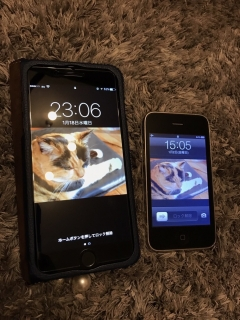
-
ラブリー！
お仕事最終日。お別れの花束。 すごく悲しいのにうれしくて、悲しくて泣いてるんだか嬉しくて涙がでてるんだか！ 顔ぐちゃぐちゃの鼻水ずるずるになって花束を抱きしめちゃった。 「やめるときは花束なんかいら…
-
わたくしとゴルフ
誕生日を迎えました。 そろそろなにか新しいことをやってみようかとゆーわけで、ゴルフです。 市場が大きい趣味だし、ひとりでもくもくと出来るスポーツでもあるということで 覚えておいて損はないかな…と。 …

-
トックリキワタとわたくし
ぽあぽあの綿にくるまれた丸い種を土に植えてはや3年。 何個か植えたのに、芽が出たのはひとつだけだったなぁ… っていうか、今になってあれこれ調べてみると、意外と発芽条件が難しかったり、種子の一部を傷付…
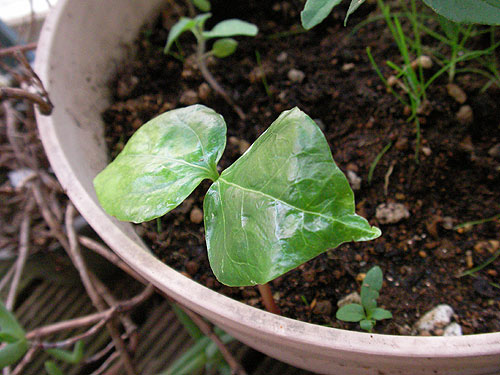
-
脂好き90歳。健康のひけつ
なんどかウチのオバーちゃんの豪傑っぷりを書いているのだけど、 90過ぎても相変わらず。 好物はカップスター（なぜかカップヌードルはダメらしい） たまにペヤング（UFOはダメらしい） まれにどん兵衛（…

-
5月まとめ
今年は春が無いと言われておりますが、ほんとにほんといきなり夏が来て、早々に熱中症になったりして大変でしたわ。やたらと熱を出してアイスしか食べられないとゆー日も。会社で吐きそうになったときは、もう気が遠…

-
最近見たDVD
最近、TSUTAYAディスカスの契約をしたので、あれこれDVD見てます。 ハズレも多いんだけど、おすすめとして美味しい＆猫映画を3本ばかりどーぞ。 ◆南極料理人 原作が面白かったので期待していた映画…

-
アレの季節
6月突入… 暖かくなると…暖かくなると… 台所が怖い！！ ゴ印さんのシーズン到来。 基本的に出てこないよう、引越時にもバルサン炊いて、 ゴミは貯めずに、エアコン排水パイプにも網を張り、換気扇は2…

-
3Dかくめい！
アキバのヨドバシに行ったら、入り口で3D VIERAのイベントをやってた。 最近テレビでよくやっている石川遼選手が出てくるコマーシャルのやつです。 私は家で「んな演出過剰なー！テレビでしょがー！JAR…

-
おもろいのよー
なんだかへんな夢を見た。 我が家のクローゼットから水が垂れていて、なんだなんだと思ったら、あれよあれよという間に建物が崩壊していくほどの水量、水圧、大洪水。 どんどんどんどん、建物から街から国ごと大…
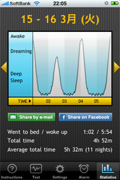
-
静電気神降臨
ここ最近、会社の通勤に回数券を使用しているのだけれども 恐ろしいほど自動改札を通過できない。 別に折り曲げたりしているわけではないのだけど、5枚に1枚はひっかかる。 どうも静電気らしい。 昔から静…
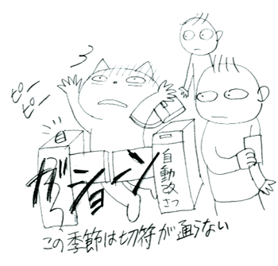
-
IMAX 3D アバターと
あまりにもまわりがアバターアバター言うので、久しぶりに映画館行ってまいりました。 あれこれネットで調べてみると、IMAX3Dがサイコー！…とのことなので、ちょっと足を伸ばして川崎の109シネマズのIM…
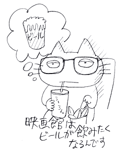
-
かっぱに会う日
二日酔いの夕方ー。 散歩してたらかっぱに出会った。酒とかっぱって相性いいよなーとか思ったりして。 カップルカッパなのかなー。 二日酔いでふーらふらしてるもんだから写真のシャッターが切れなくて、 も…

-
＞まっちゃんさま
道路以外でもねずみ取りが行われてるです。 うぉぉん！ ぱぽーぱぽーぱぽー！ 「そこの水上バイク止まりなさい！スピード落としなさいいいい！！！」 ぶおぼぼぼぼ～ ぱぽーぱぽーぱぽー！ 「屋形船の横！ス…
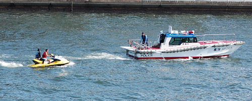
-
がんばれ！
どったばったで九州撤退してきました。 都会の水が恋しくて、久々に都内復帰。 部屋決めが大変で、あちこち見たモノの、結局九州に戻ってから内覧せずにフィーリングで決めてしまった部屋に決定。 なんてい…
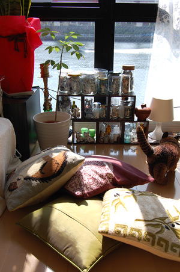
-
麻雀とわたくし
ブログ開設から早6年… 6年かっ！！…と自分でも驚きなのですが… それよりはたと気がついて驚いたのが、最初のWebサイトを作ったのは12年前だとゆーこと！ まだ高速回線も無い時代にプチプチ右往左往し…
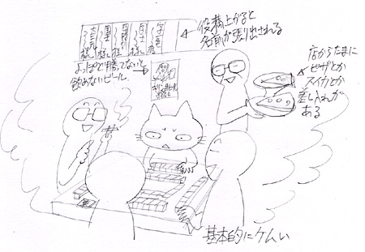
-
欲しい！
オーディマピゲのコレクション招待状。 内容うんぬんより、このゴージャスな印刷にほれぼれ。 時計は小さな小宇宙と言われるけど。本当にそのとおり。トゥールヴィヨンの動きをみていると時を刻んでいるのに、時…
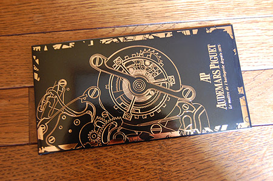
-
美しいを知ること
集英社文庫の「地獄変」表紙でにわか盛り上がっているので、相当ひさしぶりに青空文庫で「地獄変」を読んだら、記憶を塗り替えてしまった。 やたらとカビくさい古典とゆー扱いだったのだけど、こんなに美しい話だ…
-
＞ピミコさま
どーゆーわけか、わたしの靴下は勝手に散歩に出る。 数時間で帰ってくるときもあれば、何年もたってふらっと帰ってきたりする。 つーか、靴下だから、できればペアで散歩に出て行ってもらいたいところなのだけど…
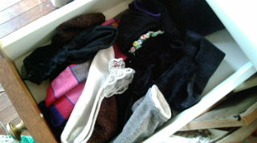
-
女子話
さいきん、会社の女の子とつるんでみたりしていております。 きゃあきゃあ根も歯もない噂話で盛り上がったり、 えらくビミョーな妄想をしたり 訳のわからないケーザイとか、ギジュツとかの話をしてみたりして…

-
告知？
茄子（上）（下） コミックスです。 どうして私は講談社が好きなんだろか？モーニング、アフタヌーン、イブニングとフルコースでハマっているマンガがあるな。 淡々とした日常、でもどこかそれに憧れを感じるよ…

-
わけのわからないもの
時空スタッフ SFか？戦うのか？助けるのか？ 「よく喋る棒のような」と言われても「よく喋る棒」というものは私にはわかりませんがな。
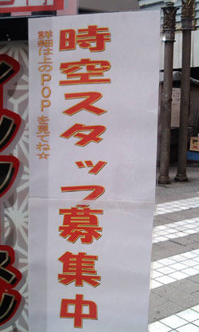
-
わすれられた女子高生
若い娘はいいね！ …ってペンギンやん！ ちょうどこの頃の日記を読み返したら、マンスリーマンションの引っ越しで右往左往した有様が書いてあった。 同じ建物の二階と三階の引っ越しだったのだけど、同じ間取り…
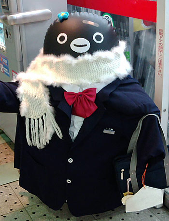
-
読書感想文ひきつづき
チャイナフリー ぐるっと見渡すと、いつのまにか囲まれている「made in china」。 いかに消費社会と中国が密接なものなのか。 一年間、家族を道連れに「made in china」を家に入れな…

-
春のにおい。β版
トーキョーでおしごと。 夕方はらはらと雨。予報に無い大粒の雨だったのだけど、「あー春のにおいがするー」と、おもわず足を止めてしまった。いやいや足とめちゃいけないんだけど。 気がつけば、もう梅も咲き始め…
-
たまには教育
だらーっと教育テレビを見てた。 かなり本格的なブイヤベースの作り方とかやってるのねー。 なるほどアニス酒のかわりに、白ワインに八角を漬けたものでもいいんだなーと…結構本格的だなーとかなんだり、だらだら…

-
ぴっかー！
おしごとですよ！！ うっす！ 今回は（も？）ややこしい！なんらかのニンジンぶら下げて頑張ろう。なにがいいだろかー。 て、ゆーか！ 新橋キムラヤはいつからヤマダ電機になったのー？

-
アルパカ画像
さいきんアルパカブームなので、のせとこ。 たしかにヘンかも。 youtubeの画像ものせとこ

-
Re
忘年会に呼ばれて一泊二日の旅。 久しぶりに羽田に来たら、トイレにモニタがついていてびっくりした。 なんだ。そんなに長居してほしいのか。 トーキョー！ 忘年会会場近くのホテルに泊まる。 なんか見晴…

-
いまのわたくし冬の読書感想文
また関東に来てます。 今年も流浪の民。なんかだんだんこっちにいる期間が長くなってきていて、今回は2ヶ月予定。 まー相変わらず、米袋並の荷物担いで走り回っているだけですがー。 走って漕いで泳いでトライア…

-
あけましちゃった
うちの神龍。 五星球はお年玉として会社の男のコにいただきました！やったー！ ことしも忙しそうだけどがんばりまーす！ みなさまにも幸多い一年でありますように！ つかもーぜ！ドラゴンボール！えい！♪

-
モノレールが好き
羽田に行くための交通手段の中ではモノレールが一番好きだなー 20分くらいの時間がトーキョーの喧噪を咀嚼するのにちょーどいいのよね。 広い窓から、トーキョーの縁側を見るかんじ。 水で縁取りされている…

-
まどべ
枯れたゴーヤと簾模様。 夏はずーっと前に終わっているんだけど、今年は忙しさの中に置いてきちゃったなー。 借景ならぬ借模様のカーテン。

-
菓子パンのくに
スーパー行ったら、広大な菓子パンコーナーが。 こっちのひとたちは菓子パンが好きなのか。 「ミカエルのジャリパン」という呪文を唱えるとこっちのひとたちは飛びついてきます。

-
くたびれフォント
朽ちて独自フォントになってますがな

-
新橋をあるくと
鉄道高架の横がこんなかんじ。 この扉はなんじゃろか。 あいかわらず、わしわしと大荷物で界隈を歩き走っております。

-
火の用心
千葉でよく見かけるポスター。 このユルキャラが火の始末してくれるのかと思うと、心配だ。

-
ハロウィンしごと
こんかいのお仕事はちょっとややこしいのでした。 自分の気持ちが前のめりになったり、弾かれたり。ううう 楽しいけど、こわーい。 初めてのアトラクションに挑むかんじ。何が出るのーどこまで登るのーぎゃー …
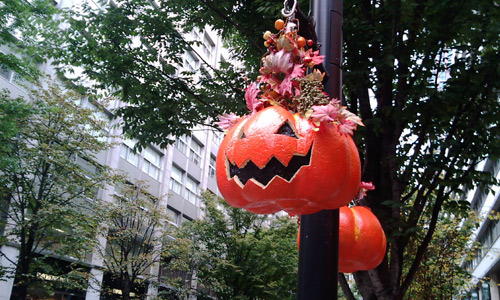
-
ぴかぴかー
仕事ですよ！ 打ち合わせと打ち合わせの合間、どっか仕事できないかなーと、某所のルノアールのビジネスルームに入ったら 圏外だったー。 とゆーか、そろそろs30も勇退かなとゆーことで仕事用ノートPC…
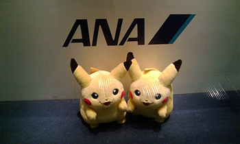
-
こすもすのきせつ
ちみちみ画像が消えちゃったのを直しております。 状況は相変わらずバタバタしてますーが、突発的にすこーんと隙間ができるので、その隙間にあちこち向かいますー。 明日は…うーん。行けるかなー？どーかなーって…
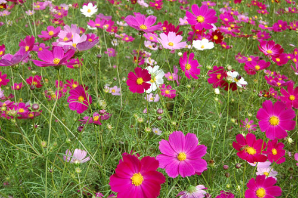
-
包まないでいいです
自転車買ってかえる。 マンスリーマンションからの通勤用。 よっぽど自分はバス、電車通勤が苦手とゆーことを知った今日このごろ。 これであちこち行ける！ それにしても「よっぽど」って言葉久しぶりに使っ…
-
おへんじ
帰ってます。が、また3連休後は関東にもどりまっす。 今度は1ヶ月半の長期予定。 マンスリーマンションを借りてもらって、とりあえず安心。 なんだかばたばたと慌ただしいけど、楽しいこともあるし。 そんな…
-
いろいろ
出張が伸びたので着る服も限られてきて、急遽ユニクロやらで購入。 ユニクロのピンクって発色が良いのと悪いのがあるんだけどわざとなのかしらー。 この型のこのピンクがほしいのにー！…ってことがあってジタバタ…
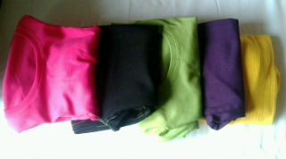
-
れんきゅうのわたくし
なんか結局1ヶ月のロングラン出張。 先週末からの三連休は、仕事に動きが無かったので実家にー。 トーキョーは五輪誘致でがんばってる。 またオリンピック来るといーね。 しばらくぶりに東京をあちこち移動す…
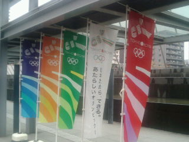
-
のろのろわれ
実家のFAXが呪われていた。
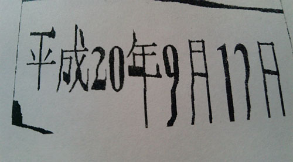
-
年末年始のわたくし
年末は20日から関東上陸。 26日までみっちりワタワタな状態が続いていて記憶が… 会社に泊まったり、近くのスパで土方のおじちゃん達に囲まれながら仮眠したりしておりました。ぐーぐーぐーぼりぼりぐーぐーぐ…

-
来れるなら
今週末。。。鎌倉行けるかも？か？どうだどうなのだ？？？
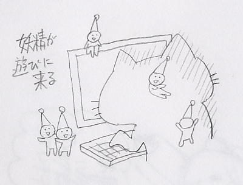
-
あしたから
宮崎で拾ったトックリキワタの種はこんなに成長いたしましたよ。 なんだかかんだか、とんでもなく忙しいのでした。あわわわわ それもこれも、あしたからオーストラリアだからなのでした。あわわ なにはともあれ…
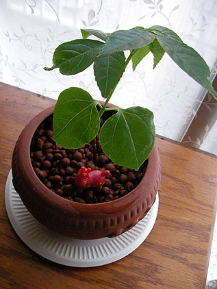